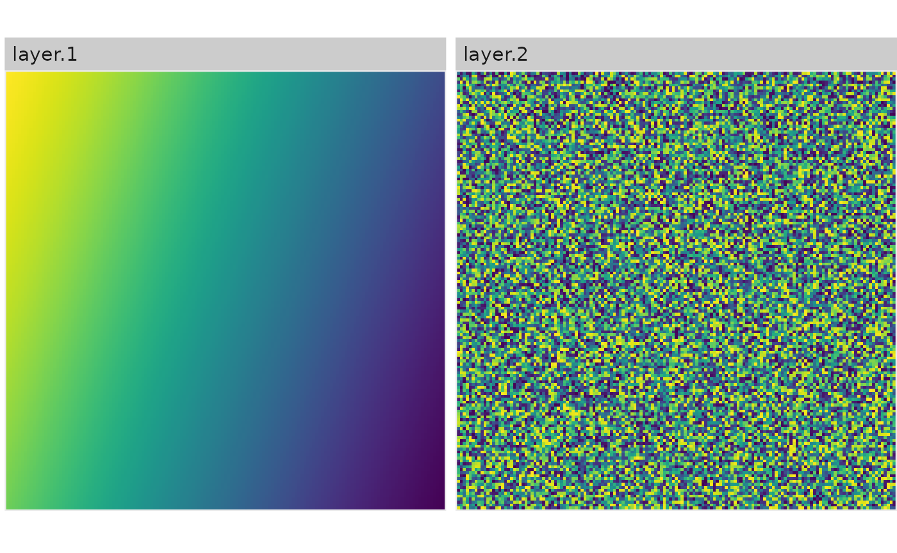
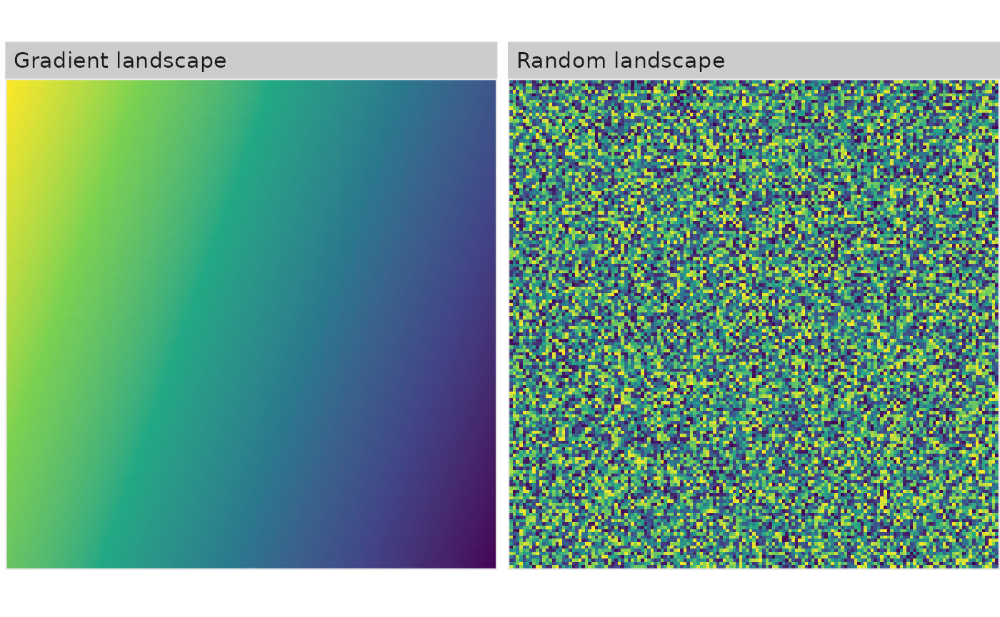

Short walkthrough and overview of landscapetools
Marco Sciaini
2024-03-09
Source:vignettes/overview.Rmd
overview.Rmdlandscapetools is not a coherent package designed for a specific scientific purpose, it is rather a collection of functions to perform some of the less-glamorous tasks involved in landscape analysis.
It is basically designed to accompany all the packages in r-spatialecology and keep them lightweight. Hence, the functionality has a broad spectrum and we try to cover here some things one might miss about landscapetools.
Visualize
There are a plethora of R packages to visualize spatial data, all of them covering unique aspects and ways to do that (find a short introduction here). With NLMR, we needed a way to visualize landscapes without much fuss and also have a way to visualize many of them in a way we found sufficient.
General raster plotting
# Plot continous landscapes
show_landscape(gradient_landscape)
# Plot continous landscapes
show_landscape(classified_landscape, discrete = TRUE)
# RasterStack/RasterBrick
show_landscape(raster::stack(gradient_landscape, random_landscape), discrete = TRUE)
# Plot a list of raster (list names become facet text)
show_landscape(list("Gradient landscape" = gradient_landscape,
"Random landscape" = random_landscape))
# Plot multiple raster with unique scales
show_landscape(raster::stack(gradient_landscape, random_landscape, classified_landscape), unique_scales = TRUE)Scaling
Binarize
In landscape ecology, many people work with landscapes that reflect a matrix / habitat context. If you work with simulated landscapes, util_binarize is a convienent wrapper to achieve this. You can define a value in the range of your landscape values and get a binary reflection of it:
# Binarize the landscape into habitat and matrix
binarized_raster <- util_binarize(fractal_landscape, breaks = 0.31415)
show_landscape(binarized_raster, discrete = TRUE)
# You can also provide a vector with thresholds and get a RasterStack with multiple binarized maps
binarized_raster <- util_binarize(fractal_landscape, breaks = c(0.25, 0.5, 0.7))
show_landscape(binarized_raster)
#> Warning: Removed 897 rows containing missing values or values outside the scale range
#> (`geom_raster()`).Classify
Complementary to util_binarize, util_classify classifies a landscape with continuous values into n discrete classes. The function is quite the workhorse, so I provide some extra detail here to explain everything:
# Mode 1: Classify landscape into 3 classes based on the Fisher-Jenks algorithm:
mode_1 <- util_classify(fractal_landscape, n = 3)
# Mode 2: Classify landscapes into landscape with exact proportions:
mode_2 <- util_classify(fractal_landscape, weighting = c(0.5, 0.25, 0.25))
# Mode 3: Classify landscapes based on a real dataset (which we first create here)
# and the distribution of values in this real dataset
mode_3 <- util_classify(gradient_landscape, n = 3)
## Mode 3a: ... now we just have to provide the "real landscape" (mode_3)
mode_3a <- util_classify(fractal_landscape, real_land = mode_3)
## Mode 3b: ... and we can also say that certain values are not important for our classification:
mode_3b <- util_classify(fractal_landscape, real_land = mode_3, mask_val = 1)
landscapes <- list(
'Mode 1' = mode_1,
'Mode 2' = mode_2,
'Mode 3' = mode_3,
'Mode 3a' = mode_3a,
'Mode 3b' = mode_3b
)
show_landscape(landscapes, unique_scales = TRUE, nrow = 1)
#> Warning: Removed 1495 rows containing missing values or values outside the scale range
#> (`geom_raster()`).
# ... you can also name the classes:
classified_raster <- util_classify(fractal_landscape,
n = 3,
level_names = c("Land Use 1",
"Land Use 2",
"Land Use 3"))
show_landscape(classified_raster, discrete = TRUE)
Rescale
util_rescale linearly rescales element values in a raster to a range between 0 and 1.
library(raster)
landscape <- raster(matrix(1:100, 10, 10))
summary(landscape)
#> layer
#> Min. 1.00
#> 1st Qu. 25.75
#> Median 50.50
#> 3rd Qu. 75.25
#> Max. 100.00
#> NA's 0.00
scaled_landscape <- util_rescale(landscape)
summary(scaled_landscape)
#> layer
#> Min. 0.00
#> 1st Qu. 0.25
#> Median 0.50
#> 3rd Qu. 0.75
#> Max. 1.00
#> NA's 0.00Merge
util_merge most likely makes sense in the context of NLMR. If you merge multiple neutral landscapes models, you can create more feasible landscape patterns for certain questions, or come up with ecotones if you merge fractal patterns with gradients.
# Merge all maps into one
merg <- util_merge(fractal_landscape, c(gradient_landscape, random_landscape), scalingfactor = 1)
# Plot an overview
merge_vis <- list(
"1) Primary" = fractal_landscape,
"2) Secondary 1" = gradient_landscape,
"3) Secondary 2" = random_landscape,
"4) Result" = merg
)
show_landscape(merge_vis)
#> Warning: Removed 1196 rows containing missing values or values outside the scale range
#> (`geom_raster()`).Export
Some proprietary software requires that .asc files have the same line breaks as ESRI ArcMap produces. As we didn’t find a correct parser in R, we wrote our on:
util_rescale(fractal_landscape, "fractal.asc")